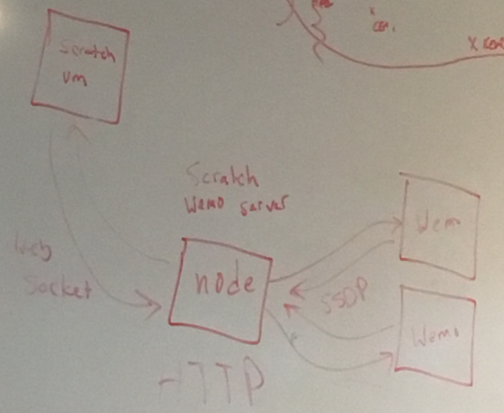

Wemo Extension Structure explained
Wemo communicates with SSPD Protocol while Websocket uses HTTP. As such, the protocols are incompatible and an intermediary server has to be written that will recieve data from the Wemo and communicate with Scratch via WebSocket
JavaScript
Serverside: is a combination of a WemoModule and WebSocketModule. WemoModule proccess all the logic and communicates with the Wemo. The WebSocketModule maintains the socket connection and passes on information
ClientSide A Wemoclient that attaches all WebSocket events and processes the received Data from the server. Provides 2 blocks currently: A block to turn on/off the Wemo and a block to read the state of the Wemo